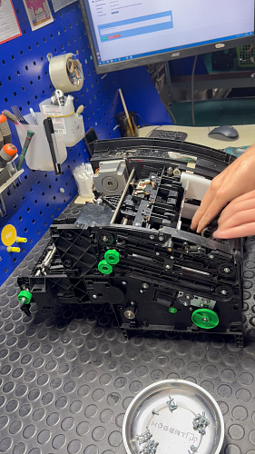
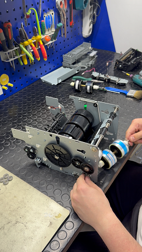
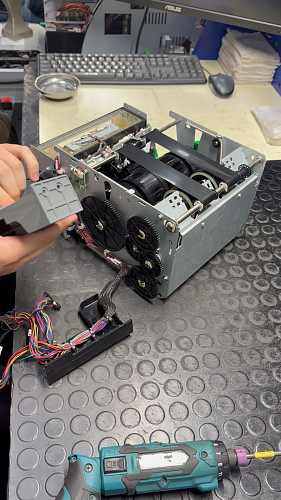
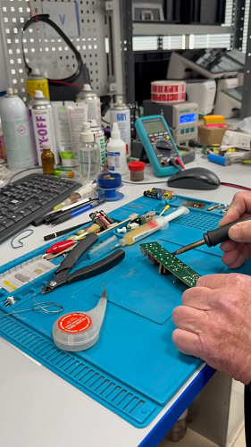
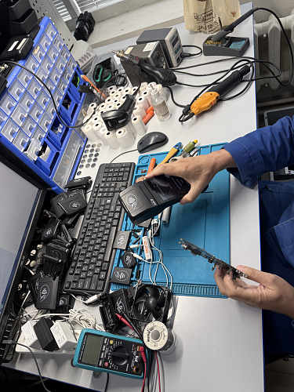
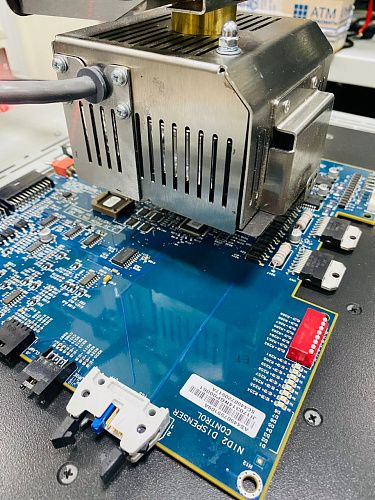
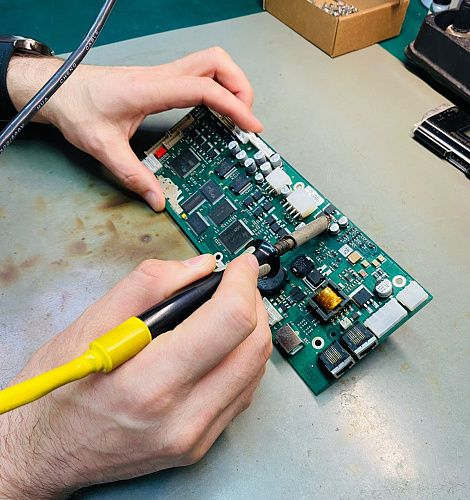

Сервисный центр обслуживания и ремонта
Цены
Существующий блокСервисный центр в цифрах
Новый блок: фактыЧто обслуживаем
Новый блок: карточкиБанкоматы и устройства самообслуживания
Диагностика, ремонт узлов, восстановление модулей, замена запчастей
POS-терминалы и кассовое оборудование
Ремонт, настройка, обновление ПО, выездное обслуживание
Компьютерная техника и принтеры
Ремонт ПК и МФУ, заправка картриджей от 180 ₽
Модули и запчасти
Восстановление узлов в сервисном центре, обменный фонд
Сроки и условия
Новый блок: таблица| Работа | Срок | Условия |
|---|---|---|
| Диагностика | 1 рабочий день | от 1 000 ₽, при ремонте входит в стоимость |
| Ремонт узла | N дней | по результату диагностики, согласование до начала работ |
| Выезд инженера | N часов по SLA | 44 города, договор на обслуживание |
| Заправка картриджей | 1 рабочий день | от 180 ₽, партии по графику |
| Гарантия на ремонт | N мес. | закрывающие документы |
Подробно об услугах сервисного центра
Существующий текстАТМ АЛЬЯНС, один из лидеров в области продаж и комплексного сервисного обслуживания банковского, POS-терминального и кассового оборудования в рамках гарантийного и постгарантийного сопровождения.
В штате компании работают сертифицированные специалисты, обеспечивающие восстановление запасных частей для банкоматов и терминалов.
Компания также является сервис-партнёром ведущих поставщиков кассового и банковского оборудования, что подтверждает компетенции и качество оказываемых услуг.
- 17 лет работы
- 700 000 объектов на обслуживании
- 85 регионов России
- 7 000 заявок ежедневно
Обслуживание компьютерной техники и принтеров
Сервисный центр оказывает полный комплекс услуг по диагностике, ремонту и техническому обслуживанию компьютерной техники. Мы выполняем ремонт персональных компьютеров, ноутбуков и принтеров, проводим диагностику неисправностей, замену комплектующих, настройку оборудования и восстановление его работоспособности. Также осуществляем заправку картриджей для принтеров.Квалифицированные специалисты помогут определить причину неисправности и предложат оптимальное решение для её устранения.
Полный спектр услуг по восстановлению банковского оборудования
АТМ АЛЬЯНС располагает собственными сервисными центрами, которые специализируются на восстановлении запчастей для банкоматов и POS-терминалов. Работа центров включает восстановление любых видов оборудования:- материнские платы
- контроллеры и другие электронные элементы
- денежные кассеты всех моделей банкоматов
Сервисные центры расположены в д. Алабино (Московская обл.) и г. Тюмени (Тюменская обл.).
Сервисное обслуживание банкоматов
На обслуживании находятся устройства крупнейших российских банков, включая Сбер, Банк ВТБ, Газпромбанк, Почта Банк, Новикомбанк, Россельхозбанк, Квант Мобайл Банк, Русфинанс Банк, Альфа-Банк, Райффайзенбанк и другие.
Компания является авторизованным сервис-партнёром производителя устройств самообслуживания Hyosung TNS. Сервисные центры АТМ АЛЬЯНС оснащены оборудованием для ремонта любых модулей устройств самообслуживания и имеют опыт работы с модулями ATM NCR, Wincor Nixdorf, Diebold и Hyosung.
На гарантийном и постгарантийном обслуживании находятся более 10 000 устройств, включая банкоматы Wincor Nixdorf, Diebold, Nautilus, NCR, GRG, Discovery, Dors, Saga, Unicum и NGT.
Предоставляем весь спектр услуг по запуску в промышленную эксплуатацию оборудования. Используем экспертные знания в работе с безопасностью и автоматизацией банковских отделений, где эффективность самообслуживания крайне важна для потребителей, стремящихся просто, удобно и безопасно осуществлять повседневные операции.
Сотрудничество с нами позволит нашим клиентам улучшить показатели SLA и доступности сети устройств самообслуживания.
Сервисное обслуживание и ремонт POS-терминалов и кассового оборудования
Сервисные центры компании оснащены полным комплектом оборудования для диагностики, настройки, регулировки и ремонта любой сложности, включая экспресс-ремонт.
На обслуживании находятся POS-терминалы крупнейших банков, среди которых Сбер, Банк ВТБ, Почта Банк и другие. Специалисты АТМ АЛЬЯНС выполняют профилактические работы, а также оказывают консультации по программному и аппаратному обеспечению.
Дополнительно сервисные центры предоставляют следующие услуги:
- ремонт любой сложности
- диагностика
- экспресс-ремонт
- использование оригинальных комплектующих
- составление акта технического состояния
- гарантия на выполненные работы
- поставка комплектующих
Объём выполняемой работы, до 15 000 единиц отремонтированного оборудования ежемесячно.
Обслуживание компьютерной техники и принтеров
Сервисный центр оказывает полный комплекс услуг по диагностике, ремонту и техническому обслуживанию компьютерной техники. Мы выполняем ремонт персональных компьютеров, ноутбуков и принтеров, проводим диагностику неисправностей, замену комплектующих, настройку оборудования и восстановление его работоспособности. Также осуществляем профессиональную заправку картриджей для лазерных принтеров. Квалифицированные специалисты помогут определить причину неисправности и предложат оптимальное решение для её устранения.Ремонт плат
Сервисный центр оснащён полным комплектом технологического оборудования и выполняет до 7 000 ремонтов ежемесячно, обеспечивая профессиональный ремонт и восстановление всех типов электронных плат. Работы проводятся более чем 100 опытными сертифицированными специалистами, а система быстрой диагностики позволяет заранее получить точный расчёт стоимости ещё до начала ремонта.
Виды ремонтируемых плат:
- диагностика
- экспресс-ремонт
- использование оригинальных комплектующих
- составление акта технического состояния
- гарантия на выполненные работы
- поставка комплектующих
- ремонт любой сложности
Состав услуг комплексного технического обслуживания банкоматов и терминалов:
- первичная диагностика АТМ с использованием возможностей стандартного ПО установленного на АТМ
- диагностика АТМ с применением ПО производителя АТМ
- проведение работ по сбросу различных ошибок, перезагрузке устройства самообслуживания
- технические консультации в режиме «Горячая линия»
- замена чековой и журнальной ленты, устранение замятий чекового и журнального принтеров
- устранение неисправностей, не требующих ремонта/замены запасных частей, в т.ч. устранение мелких неполадок (выемка шпуль от бумаги, застрявших карт, удаление инородных предметов, чистка датчиков и т. д.)
- проверка УС на предмет наличия (снаружи или внутри) посторонних устройств и предметов
- замена и ремонт модулей УС
- профилактические работы (чистка, настройка УС)
- совместный выезд с инкассаторами для выявления и устранения неисправностей и технического осмотра сейфовой зоны устройства самообслуживания
- проверка электропитания и заземления. Восстановление электрического соединения устройства с сетью
- восстановление кабельного соединения банкомата, компонентов коммуникационного оборудования
- монтаж и настройка дополнительного оборудования (перезагрузка, подключение специализированного оборудования)
- переустановка и обновление ПО (в том числе ОС устройства самообслуживания)
- проведение технической экспертизы и оценки стоимости восстановления УС при наступлении вне сервисных случаев, или по заявке заказчика с предоставлением акта выполненных работ, акта технического осмотра и акта технической экспертизы УС









Как проходит ремонт
Новый блок: этапы- Заявка на сайте или по 8 800 200 62 32, описание неисправности
- Диагностика в сервисном центре или на объекте
- Согласование стоимости и срока до начала работ
- Ремонт, тестирование, выдача с документами и гарантией
Примеры работ
Новый блок: кейсы
Парк банкоматов региона
число устройств, срок, результат

POS-терминалы сети
44 города, 5 000 заявок в день. клиент

Оргтехника организации
объём, срок
Частые вопросы
Новый блок: FAQСколько стоит диагностика?
Работаете ли по договору с юрлицами?
Есть ли выезд инженера?
Какая гарантия на ремонт?
Оставить заявку в сервисный центр
Новый блок: заявкаОпишите оборудование и неисправность, ответим с ценой диагностики и сроком.
- Ответ в течение рабочего дня
- Договор и закрывающие документы
- Гарантия на ремонт